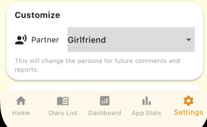
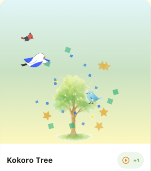
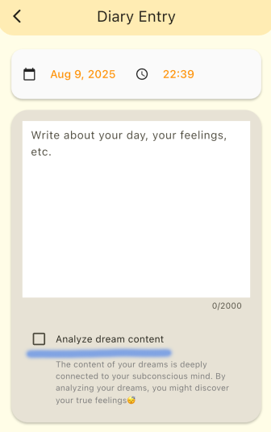

Welcome! Your daily small thoughts become the "traces of your heart." Start with just 1-3 lines and take it easy.
1. Main Features
How to Change Partner Settings
You can change your partner from the Settings screen. Customize your companion that stays by your side and warmly watches over your daily records.

Home Screen
Heart Tree: Grows each time you post a diary entry. The more you continue, the richer it becomes, making your daily accumulation visible.

Post History: Check your number of posts and consecutive days at a glance. Achievement motivates you to continue.
Diary Entry
Normal Mode: Record daily events and feelings freely.
Dream Diary Mode: Dream analysis is enabled to analyze and comment on your dream world. Turn the blue line section ON for dream diary mode, OFF for normal mode.

AI Comments: Your partner gives gentle comments based on your content. Makes reflection enjoyable.
Diary List
Filtering (bookmarks/with images/dream diaries only, etc.) allows you to quickly narrow down the records you want to see.